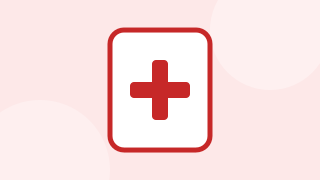
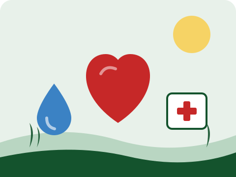
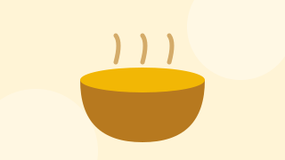
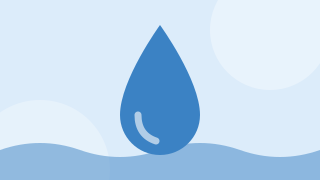

1. Bantuan Medis & Ambulans Darurat
Penyediaan obat-obatan esensial, kasa steril, dan operasional tim medis darurat di lapangan.
Bantu saudara-saudara kita yang membutuhkan obat-obatan, paket pangan, dan air bersih secara amanah dan transparan.
Donasi Sekarang →

Penyediaan obat-obatan esensial, kasa steril, dan operasional tim medis darurat di lapangan.

Distribusi ribuan porsi makanan hangat dan bahan pokok gandum untuk keluarga di pengungsian.

Pasokan air layak minum dan penyediaan fasilitas sanitasi darurat untuk mencegah penyakit.
Rp 850.000.000
Total Dana Terhimpun
4.520 Orang
Jumlah Donatur Tergabung
12.500 Warga
Penerima Manfaat Bantuan
Penyaluran air bersih untuk kamp-kamp pengungsian wilayah Khan Younis dan Deir al-Balah.
Peralatan bedah darurat dan infus telah diterima oleh dokter sukarelawan setempat.